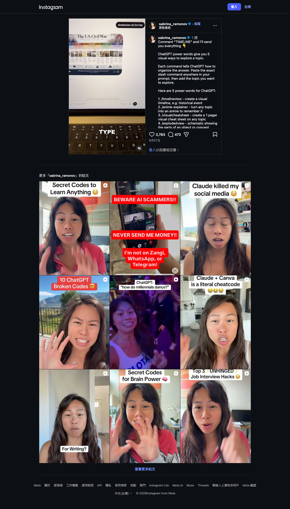
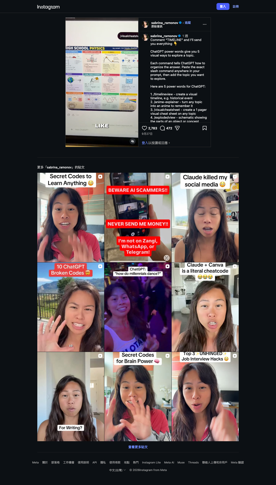
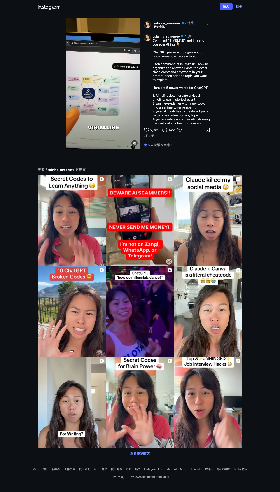

Instagram｜ChatGPT 五種視覺化提示詞：時間軸、動漫解說、速查表、爆炸圖與心智圖
一句話摘要
這組 prompt 最有價值的不是斜線指令本身，而是先決定「我要用哪一種認知結構理解資料」：時間順序、記憶鉤子、考前總覽、組成拆解，或概念關係。**請把 `/timelineview` 等視為自訂 prompt 標籤，不是 ChatGPT 已保證支援的內建 slash command。**
Reel 可見內容
帳號 `sabrina_ramonov` 的影片長約 29.2 秒。貼文列出五個「ChatGPT power words」，主張在 prompt 中貼上斜線名稱、再加入主題；本次取樣約第 3、15、24 秒，屬畫面式擷取而非完整產品測試。
- **/timelineview**：影片以 `US Civil War` 示範，畫面輸出為 `The U.S. Civil War` 的橫向時間線資訊圖。
- **/anime-explainer**：貼文描述為「把任何主題變成有助記憶的動漫式解說」；本次取樣沒有看到它的完整輸出畫面。
- **/visualcheatsheet**：影片用 `HIGH SCHOOL PHYSICS` 產生一頁式視覺速查表，包含運動、牛頓定律、能量、動量、重力、熱力學、電磁、波與光學等區塊。
- **/explodedview**：貼文描述為物件或概念各組成部分的 schematic；本次取樣沒有看到完整輸出畫面。
- **/mindmap**：影片以醫療保健工作為題，生成 `Jobs in Healthcare` 心智圖，畫面可讀到臨床照護、診斷與治療、藥學、輔助醫療、行政與研發等分支。



可直接重用的繁中提示詞模板
以下模板保留作者的五種輸出意圖，但將「格式、受眾、範圍、可查核性」寫清楚。把 `[方括號]` 改成自己的內容即可。
### 1. 時間軸：/timelineview
```text
/timelineview
請把「[主題]」做成繁體中文的橫向時間軸。
範圍：[起始時間] 到 [結束時間]；受眾：[例如高中生／一般讀者]。
列出 [6–10] 個關鍵節點，每個節點包含：日期或年代、事件名稱、1 句影響說明。
若日期或因果關係不確定，明確標示「待查證」，不要編造。
最後附：3 個最值得追問的問題，以及可用於查核的來源類型。
```
適合處理歷史、產品演進、專案里程碑、政策變化與學習計畫。若需要真正的視覺圖，應在提示中補充尺寸、版面、是否可輸出 Markdown／SVG／簡報，而非只依賴斜線名稱。
### 2. 動漫式記憶解說：/anime-explainer
```text
/anime-explainer
請以原創、教育導向的「動漫式分鏡」解釋「[主題]」，不要模仿任何既有作品或角色。
受眾：[年齡／背景]；目標是幫助記住 [3–5] 個核心概念。
請輸出 6 格分鏡：每格包含畫面描述、角色對白、要記住的事實、以及 1 句避免誤解的註記。
最後整理成 5 張問答式複習卡；涉及數字、日期或科學結論時，標示需查核處。
```
「動漫」適合作為視覺語氣，不應取代內容正確性；也不要要求模仿受版權保護的特定畫風或角色。
### 3. 一頁視覺速查表：/visualcheatsheet
```text
/visualcheatsheet
為「[主題]」製作一頁式繁體中文視覺速查表。
受眾：[例如期中考複習／新進同事]；限定在 [範圍]。
請分成 [4–8] 個區塊；每區只保留：定義、關鍵公式／步驟、常見錯誤、1 個微型例子。
先輸出可核對的文字版，再提供適合 A4 直式版面的版型規格。
若有公式，使用標準符號並逐一說明變數；不確定的內容要標記待查證。
```
這種格式最適合考前整理、會議決策摘要、流程交接與工具入門。重點是設定範圍，否則「一頁」很容易變成資訊過載。
### 4. 組成拆解圖：/explodedview
```text
/explodedview
請將「[物件或概念]」做成繁體中文的爆炸圖／組成拆解說明。
列出 [5–10] 個部分：名稱、功能、和其他部分的關係，以及缺失時可能造成的影響。
先判斷這個主題是否適合實體爆炸圖；若是抽象概念，改用「系統分層圖」，不要假裝存在物理零件。
輸出：文字拆解清單、ASCII 或 Mermaid 結構草圖，以及視覺圖生成規格。
明確區分已知事實、合理推測與待查證資訊。
```
適合產品、硬體、系統架構、組織流程與複雜概念。關鍵在於不要把抽象概念硬畫成錯誤的「零件圖」。
### 5. 概念關係圖：/mindmap
```text
/mindmap
請以「[中心主題]」建立繁體中文心智圖。
先列出 [4–6] 個第一層分支，每個分支再列 [2–4] 個第二層節點；每個節點最多 12 個字。
節點要呈現關係而非重複分類：可使用「原因、結果、方法、風險、資源、案例」等關係詞。
輸出 Markdown 大綱與 Mermaid mindmap 語法；最後列出 3 個目前缺少、需要補資料的節點。
```
適用於職涯探索、研究選題、產品策略、課程設計與知識盤點。心智圖是導航工具，不是證據本身；關鍵節點仍要回到可靠來源查核。
實作提醒：斜線不會自動產生魔法
本次未能取得 OpenAI Help Center 的提示工程文章（頁面要求 Cloudflare 驗證），因此不將任何「官方建議」歸因給 OpenAI。可從影片直接確認的是作者把這五個字串當作 prompt 前綴使用；不能確認它們是所有 ChatGPT 帳號皆可用的系統功能。
要讓結果可重複，建議固定寫出：
- **目標與受眾**：你想學會、說服或決策什麼？誰要看？
- **事實範圍**：時間區間、地理範圍、可用資料與禁止推論的部分。
- **輸出規格**：節點數、版面大小、語言、是否要 Markdown、表格、Mermaid 或圖片描述。
- **驗證規則**：日期、引用、數據、公式與醫療／法律／財務說法都要標示來源或待查證。
- **迭代方式**：先讓模型產生文字結構，再逐步要求刪減、修正、補來源，最後才製作視覺稿。
原始連結
- Instagram Reel：https://www.instagram.com/reel/Ddy9jzll3zu/
來源擷取紀錄：`source-archive/2026-10-11-instagram-sabrina-ramonov-chatgpt-visual-prompts.json`